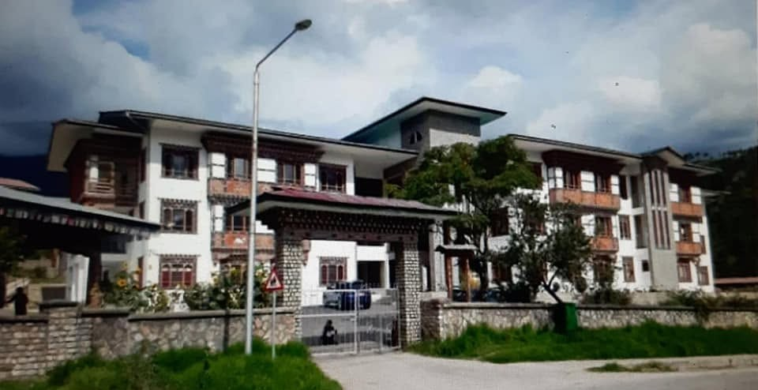

Personal Portfolio Website
A simple website to introduce myself, share my skills, and display my academic work.
HTML · CSS · JavaScript
HELLO, WELCOME TO MY PORTFOLIO
I am learning about networking, web development, and computer systems. I enjoy exploring technology and creating useful digital solutions.
View My ProjectsI am a Diploma in Computer System and Networking student at Jigme Namgyel Engineering College (JNEC). I am currently serving as the Club Secretary of the Y-PEER Club, where I continue to develop my leadership, teamwork, and communication skills. I am interested in networking, web design, and system administration. Besides my academic interests, I enjoy travelling, exploring new places, and discovering new things that broaden my knowledge and experiences. My goal is to strengthen my technical skills, gain practical experience, and become a skilled and capable IT professional.
WHAT I AM LEARNING
MY PRACTICE WORK
A simple website to introduce myself, share my skills, and display my academic work.
HTML · CSS · JavaScript
A desktop app for recording devices and tracking repairs. Admins add, search, sort, update and export repair records, while customers log in to check the status of their own devices.
Python · Tkinter · SQLite
A multihomed hospital network built in Cisco Packet Tracer. Three routers, each in its own Autonomous System, run eBGP with a backup path, and an extended ACL keeps the patient database hidden while the web portal stays public.
Cisco Packet Tracer · eBGP · Access Control Lists
Edit these project descriptions to match your actual work and progress.
MY BACKGROUND
Jigme Namgyel Engineering College (JNEC)
Currently studying computer systems, networking, and related IT technologies through coursework and practical laboratory sessions to develop technical knowledge and hands-on skills.
Motithang Higher Secondary School
Completed my high school education, building a strong academic foundation and developing essential learning and communication skills.

ACHIEVEMENTS
Courses and networking certifications I have completed to build my technical skills.
Coursera • EDUCBA • Sep 13, 2026
Coursera • Board Infinity • Sep 2, 2026
Coursera • Packt • Sep 13, 2026
Cisco Networking Academy • JNEC • 27 Jul 2026
Cisco Networking Academy • JNEC • 27 Jul 2026
OUTSIDE THE CLASSROOM
Things I enjoy doing in my free time.
I like playing basketball with friends. It keeps me active and teaches me teamwork.
I enjoy hiking, exploring new trails and spending time in nature.
I love listening to songs to relax, stay motivated and enjoy my free time.
GET IN TOUCH
Feel free to contact me for learning opportunities, collaboration, or project discussions.
Email: 05250188.jnec@rub.edu.bt
GitHub: github.com/rune561